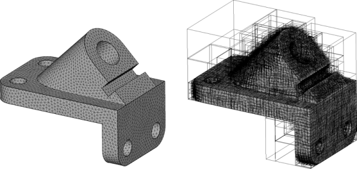
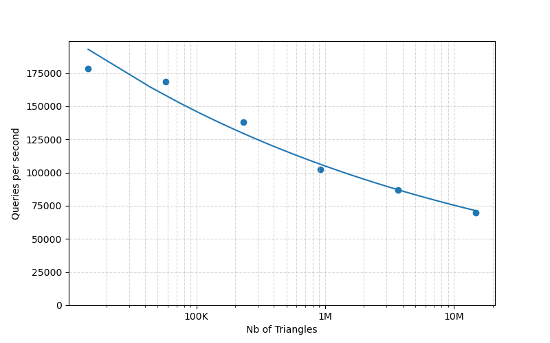
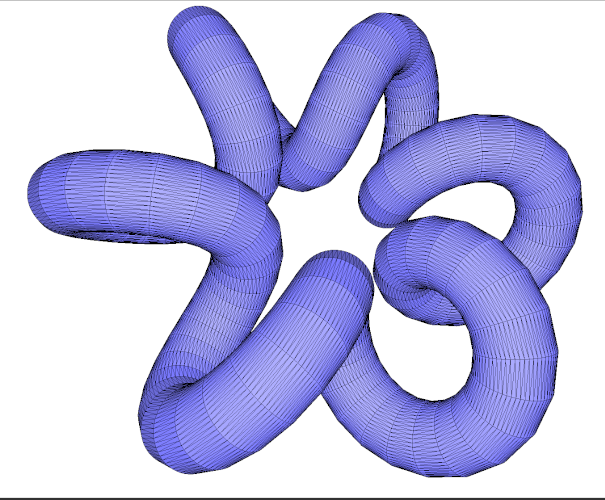
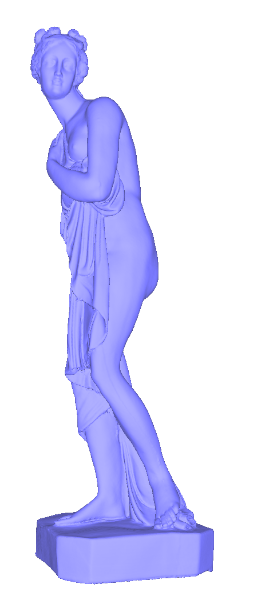
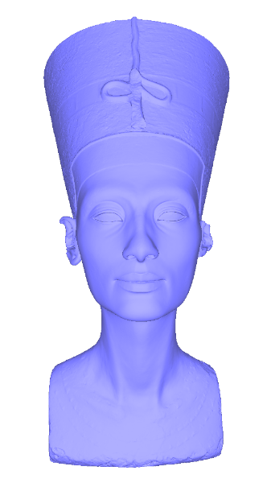
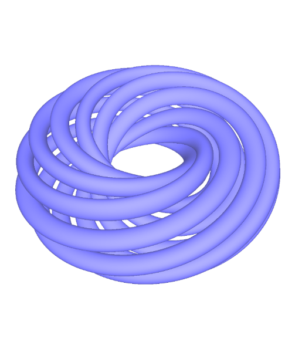

- Generated by
 1.17.0
1.17.0
|
CGAL 6.2 - Fast Intersection and Distance Computation (AABB Tree)
|
The AABB tree component offers a static data structure and algorithms to perform efficient intersection and distance queries against sets of finite 2D or 3D geometric objects. The set of geometric objects stored in the data structure can be queried for intersection detection, intersection computation and distance. The intersection queries can be of any type, provided that the corresponding intersection predicates and constructors are implemented in the traits class. The distance queries are limited to point queries. Examples of intersection queries include line objects (rays, lines, segments) against sets of triangles, or plane objects (planes, triangles) against sets of segments. An example of a distance query consists of finding the closest point from a point query to a set of triangles.
This component solves the problem of finding all intersecting pairs of objects and achieves better perfomance than Intersecting Sequences of dD Iso-oriented Boxes when using parallel execution.
The AABB tree data structure takes as input an iterator range of geometric data, which is then converted into primitives. From these primitives a hierarchy of axis-aligned bounding boxes (AABBs) is constructed and used to speed up intersection and distance queries. Each primitive gives access to both one input geometric object (so-called datum) and one reference id to this object. A typical example primitive wraps a 3D triangle as datum and a face handle of a polyhedral surface as id. Each intersection query can return the intersection objects (e.g., 3D points or segments for ray queries) as well as the id (here the face handle) of the intersected primitives. Similarly, each distance query can return the closest point from the point query as well as the id of the closest primitive.

The main entry point to the component is the class AABB_tree which represents a static AABB tree constructed from an iterator range of geometric data. Once instantiated an AABB tree can be queried for intersection and distance queries.
Intersections. Assume for example that the tree contains triangle primitives. The tree can be queried for intersection against line objects (rays, segments or line) in various ways. We distinguish intersection tests which do not construct any intersection objects, from intersections which construct the intersection objects.
Tests:
Constructions:
Distance. An AABB tree computes the closest point from a given point query to the input primitives through the function AABB_tree::closest_point(). In addition, it can compute the id of the closest primitive from a given point query through the function AABB_tree::closest_point_and_primitive(), i.e., the id of the primitive which realizes the minimum distance from the point query. The AABB tree uses a secondary search structure to speed up the distance queries. The construction of this secondary structure should be requested by the user by a call to AABB_tree::accelerate_distance_queries() before the first the distance computation. This data structure is not generated by default because it is used only for distance computations.
Given two AABB trees, the function CGAL::AABB_trees::do_intersect() determines whether any primitive of the first tree intersects a primitive of the second tree. To enumerate all intersecting pairs of primitives, use CGAL::AABB_trees::all_pairs_of_intersecting_primitives().
These functions provide an alternative to CGAL::box_intersection_d(). In practice, CGAL::AABB_trees::all_pairs_of_intersecting_primitives() generally provides better performance, particularly when using a parallel execution tag (see Performances).
Moreover, if several calls to CGAL::AABB_trees::all_pairs_of_intersecting_primitives() are performed using the same trees, the trees need to be constructed only once. Consequently, the performance advantage over CGAL::box_intersection_d() becomes even greater.
In the following example a set of 3D triangles is stored in a list. The AABB primitive wraps a triangle as datum and an iterator in the list as id. We compute the number of input triangles intersected by a ray query, as well as the closest point and the squared distance from a point query.
Example: AABB_tree/AABB_triangle_3_example.cpp
In the following example the AABB primitive wraps a facet handle of a triangle polyhedral surface as id and the corresponding 3D triangle as geometric object. From a segment query we test the intersections, then compute the number of intersections, compute the first encountered intersection (generally a point), compute all intersections (where each intersection is a pair of one CGAL object and one primitive id - here a face handle) and compute all intersected primitives. The latter involves only tests and no predicates and is hence faster than computing all intersections. We also compute the first encountered intersection with a plane query, which is generally a segment. We finally compute the first intersection along a ray.
Example: AABB_tree/AABB_polyhedron_facet_intersection_example.cpp
In the following example we load a closed polyhedral surface and perform a ray shooting query from the centroid of each face, orthogonally to the face towards the interior. As the centroid is computed with floating point arithmetic the first face hit by the ray may be the face of the centroid. The skip functor takes care of ignoring the face.
Example: AABB_tree/AABB_ray_shooting_example.cpp
In the following example the AABB primitive wraps a facet handle of a triangle polyhedral surface as id and the corresponding 3D triangle as geometric object. From a point query we compute the squared distance, the closest point as well as the closest point and primitive id. The latter returns a pair composed of a point and a face handle.
Example: AABB_tree/AABB_polyhedron_facet_distance_example.cpp
In the following example the segments are stored into a list, and the AABB primitive wraps a segment as datum and an iterator in the list as id. We compute the number of intersections with plane and triangles queries, and the closest point from a point query. Example: AABB_tree/AABB_segment_3_example.cpp
The following example uses segments given by a polyline and a polygon. The difference is that the polygon is closed. The id in this case is the iterator pointing to a Point_2 in the polyline or the polygon. The datum, a Segment_2, is created on the fly from the points using the id as the source and the following Point_2 as the target. We count the intersections with a Segment_2 and the closest point and id from a point query. Example: AABB_tree/AABB_polyline_segment_2_example.cpp
In the following example the AABB primitive wraps a halfedge handle as id and generates a 3D segment on the fly, each time its method datum is called. We compute the number of intersections with a triangle query and the closest point from a point query. Example: AABB_tree/AABB_polyhedron_edge_example.cpp
The AABB tree is a static data structure, but it allows to insert primitives, and will internally rebuild triggered by the first query, or because the user calls the AABB_tree::build() method. The following example illustrates this for two polyhedral surfaces.
Example: AABB_tree/AABB_insertion_example.cpp
The AABB tree example folder contains three examples of trees constructed with custom primitives. In AABB_custom_example.cpp the primitive contains triangles which are defined by three pointers to custom points. In AABB_custom_triangle_soup_example.cpp all input triangles are stored into a single array as to form a triangle soup. The primitive internally uses a boost::iterator_adaptor as to provide the three functions AABBPrimitive::id(), AABBPrimitive::datum(), and AABBPrimitive::reference_point() required by the primitive concept. In AABB_custom_indexed_triangle_set_example.cpp the input is an indexed triangle set stored through two arrays: one array of points and one array of indices which refer to the point array. Here also the primitive internally uses a boost::iterator_adaptor.
In the following example, we compute all the intersections between two tetrahedra. The tetrahedra are stored as a vector of Triangle_3. We first compute if the tetrahedra do intersect and then we compute the indices of the intersecting triangles.
Example: AABB_tree/AABB_intersection_example.cpp
We provide some performance numbers for the case where the AABB tree contains a set of polyhedron triangle facets. We measure the tree construction time, the memory occupancy and the number of queries per second for a variety of intersection and distance queries. The machine used is a PC running Linux Mint with an Intel CPU Core Ultra 7 155H with 16 cores and 32GB of RAM. By default, the kernel used is Simple_cartesian<double> (the fastest in our experiments). The program has been compiled with gcc 13.3 2023 compiler with the O3 option which maximizes speed.
The surface triangle mesh chosen for benchmarking the tree construction is the knot model (14,400 triangles) depicted by Figure 103.2. We measure the tree construction time (both AABB tree alone and AABB tree with internal KD-tree) for four denser versions if the knot model.
| Number of triangles | Construction (in ms) (Parallel) | (Sequential) | Construction with internal KD-tree (in ms) (Parallel) | (Sequential) |
|---|---|---|---|---|
| 230,400 | 20 | 36 | 48 | 66 |
| 921,600 | 72 | 187 | 155 | 306 |
| 3,686,400 | 292 | 816 | 729 | 1426 |
| 14,745,600 | 1,425 | 4,196 | 3,028 | 7,016 |
When using the polyhedron triangle facet primitive (defined in AABB_face_graph_triangle_primitive.h) the AABB tree occupies approximately 61 bytes per primitive (without constructing the internal KD-tree). It increases to approximately 150 bytes per primitive when constructing the internal KD-tree with one reference point per primitive (the default mode when calling the function AABB_tree::accelerate_distance_queries()). Note that the polyhedron facet primitive stores only one facet handle as primitive id and computes on the fly a 3D triangle from the facet handle stored internally. When explicitly storing a 3D triangle in the primitive the tree occupies approximately 140 bytes per primitive instead of 60 (without constructing the internal KD-tree).
The following table provides orders of memory occupancy in MBytes for an increasing number of triangles. As the internal KD-tree used to accelerate the distance queries dominates the memory occupancy, we recommend to specify for large models a lower number of reference point (evenly distributed) to construct the internal KD-tree through the function AABB_tree::accelerate_distance_queries() which takes an iterator range as input.
| Number of triangles | AABB tree (in MBytes) | AABB tree with internal KD-tree (in MBytes) |
|---|---|---|
| 18,400 | 1.10 | 2.76 |
| 102,400 | 6.33 | 14.73 |
| 1,022,400 | 59.56 | 151.31 |
| 1,822,400 | 108.34 | 291.84 |
The following table measures the number of intersection queries per second on one core on the 14,400 triangle version of the knot mesh model for ray, line, segment and plane queries. Each ray query is generated by choosing a random source point within the mesh bounding box and a random vector. A line or segment query is generated by choosing two random points inside the bounding box. A plane query is generated by picking a random point inside the bounding box and a random normal vector. Note that a plane query generally intersects many triangles of the input surface mesh. This explains the low performance numbers for the intersection functions which enumerate all intersections.
| Function | Segment | Ray | Line | Plane |
|---|---|---|---|---|
| AABB_tree::do_intersect() | 513,505 | 788,246 | 773,947 | 1,863,721 |
| AABB_tree::any_intersected_primitive() | 521,651 | 852,929 | 831,919 | 2,125,582 |
| AABB_tree::any_intersection() | 504,836 | 835,164 | 821,369 | 1,730,017 |
| AABB_tree::number_of_intersected_primitives() | 186,102 | 397,069 | 210,052 | 49,941 |
| AABB_tree::all_intersected_primitives() | 178,769 | 397,458 | 192,482 | 49,324 |
| AABB_tree::all_intersections() | 178,536 | 352,541 | 193,700 | 21,745 |
Curve of Figure 103.2 plots the number of queries per second (here the AABB_tree::all_intersections() function with random segment queries) against the number of input triangles for the knot triangle surface mesh.
 |  |
The following table measures the number of AABB_tree::all_intersections() queries per second against several kernels. We use the 14,400 triangle version of the knot mesh model for random segment queries.
| Kernel | Queries/s (all_intersections() with segment queries) |
|---|---|
| Simple_cartesian<double> | 201,618 |
| Simple_cartesian<float> | 193,414 |
| Cartesian<double> | 164,784 |
| Cartesian<float> | 159,686 |
| Exact_predicates_inexact_constructions_kernel | 119,590 |
The surface triangle mesh chosen for benchmarking distances is again the knot model in six increasing resolutions. In the following table we first measure the tree construction time (which includes the construction of the internal KD-tree data structure used to accelerate the distance queries by up to one order of magnitude in our experiments). We then measure the number of queries per second for the three types distance queries (AABB_tree::closest_point(), AABB_tree::squared_distance() and AABB_tree::closest_point_and_primitive()) from point queries randomly chosen inside the bounding box.
| Nb triangles | Closest_point() | Squared_distance() | Closest_point_and_primitive() |
|---|---|---|---|
| 14,400 | 196,043 | 196,356 | 196,708 |
| 57,600 | 123,388 | 123,844 | 123,567 |
| 230,400 | 54,480 | 53,235 | 54,329 |
| 921,600 | 25,761 | 26,890 | 25,386 |
| 3,686,400 | 13,696 | 13,389 | 13,440 |
| 14,745,600 | 7,158 | 6,913 | 7,010 |
We test the intersection of two AABB trees using 3 models: iphigenia and the Nefertiti that are two common models of mesh processing and twisted knot to maximize the number of intersection. For each model, we test their intersection with a translated version of themselves (Note: We do not exploit the fact that it is the same model, the tree is built two times). We compare here CGAL::AABB_trees::all_pairs_of_intersecting_primitives() and CGAL::box_intersection_d().
We exhibit the performance of the intersection of two AABB trees using three models: Iphigenia and Nefertiti Figure 103.2, which are widely used benchmark meshes in geometry processing, and a twisted knot Figure 103.2, chosen to maximize the number of intersections.
For each model, we compute the intersections between the model and a translated copy of itself. Although both trees are built from the same mesh, we intentionally construct the AABB tree twice and do not exploit this fact. We compare the performance of CGAL::AABB_trees::all_pairs_of_intersecting_primitives() with that of CGAL::box_intersection_d().
 |  |  |
| Models | Nb Triangles | Nb Intersections | AABB | Tree (ms) | Box d | AABB | Tree Seq. | (ms) | Box d Seq. | ||||
|---|---|---|---|---|---|---|---|---|---|---|---|---|---|
| Build | Do intersect | All pairs | All pairs + Build | Build | Do intersect | All pairs | All pairs + Build | ||||||
| Iphigenia × Iphigenia Tr. | 703,512 × 703,512 | 47,677 | 91 | <0.1 | 37 | 128 | 424 | 318 | <0.1 | 169 | 488 | 868 | |
| Nefertiti × Nefertiti Tr. | 2,018,232 × 2,018,232 | 14,246 | 261 | <0.1 | 10 | 271 | 1,006 | 1,087 | <0.1 | 46 | 1,134 | 2,348 | |
| Twisted knot × Twisted knot Rot. | 600,000 × 600,000 | 240,144 | 154 | <0.1 | 57 | 211 | 850 | 541 | <0.1 | 440 | 981 | 2,993 | |
The experiments described above are neither exhaustive nor conclusive as we have chosen one specific case where the input primitives are the facets of a triangle surface polyhedron. Nevertheless, we now provide some general observations and advises about how to put the AABB tree to use with satisfactory performances. While the tree construction times and memory occupancy do not fluctuate much in our experiments depending on the input surface triangle mesh, the performance expressed in number of queries varies greatly depending on a complex combination of criteria: type of kernel, number of input primitives, distribution of primitives in space, type of function queried, type of query and location of query in space.
The AABB tree construction is initialized by computing the AABB of the whole set of input primitives. All primitives are then sorted along the longest coordinate axis of this box, and the primitives are separated into two equal size sets. This procedure is applied recursively until an AABB contains a single primitive. The tree is leafless as presented in OPCODE [1]. An intersection query traverses the tree by computing intersection tests only with respect to the AABBs during traversal, and with respect to the input primitives at the end of traversal (in the leafs of the tree).
The reference id is not used internally but simply used by the AABB tree to refer to the primitive in the results provided to the user. It follows that, while in most cases each reference id corresponds to a unique primitive, this is not a requirement of the component. This way a user may use these reference ids as labels, each of them being shared by several geometric objects.
A distance query between a query point q and the input primitives is turned into a ball query centered at q. The ball traverses the tree while recursively querying intersections with the AABBs, and computes the closest point p from the query point to the input primitives at the leafs of the tree. The ball radius is then shrunk to the distance between p and q for all remaining recursive traversals of the tree. Efficiency is achieved through setting the initial ball radius to a small value still guaranteed to intersect the input primitives. This is achieved by constructing an internal secondary data structure which provides a good hint to the algorithm at the beginning of the traversal (done by default). Calling AABB_tree::do_not_accelerate_distance_queries() will disable the construction and the usage of this internal secondary data structure.
Camille Wormser and Pierre Alliez started working on a data structure for efficient collision detection in 2007. The generic design for implementing both intersection and distance queries, and for generic queries and primitives was developed by Camille Wormser. In 2009, Pierre Alliez, Stéphane Tayeb and Camille Wormser made the implementation CGAL-compliant, with the help of Laurent Rineau for optimizing the tree construction. Additionally, Andreas Fabri, Jane Tournois, Mariette Yvinec and Sylvain Lefèbvre are given thanks for helpful comments and discussions during that period. Later, Sébastien Loriot contributed several improvements: thread-safe queries, introduction of shared data stored in the traits for lighter primitive types, ... In 2024, the package was made compatible with 2D and 3D primitives by Andreas Fabri, Sébastien Loriot, and Sven Oesau. In 2026, the package was extended to support the intersection of two AABB trees. This work also introduced performance optimizations and parallelization, contributed by Leo Valque.